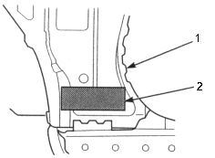
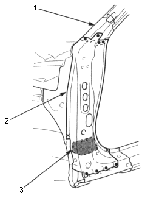
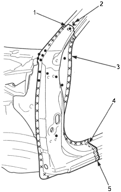
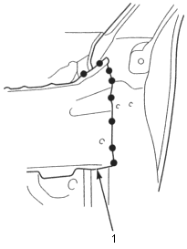

- Glue the insulator to the inner lower at the front pillar lower separator mounted position.
Insulator: P.N. 74416-SR1-000
Adhesive: Cemedine 366, or equivalent

- INNER LOWER
- INSULATOR
- Set the new front pillar lower stiffener into position, and tack weld the clamped position.
- Cut the repair part (outer panel), set it into position. Clamp the repair part, and check the body dimensions (see section 4).
- Temporarily install the windshield, front door, hood and front fender, and check for difference in level and clearance. Make sure the body lines flow smoothly.
- Remove the repair part, and weld the front pillar lower stiffener, upper stiffener and side sill reinforcement.

- FRONT PILLAR UPPER STIFFENER
- FRONT PILLAR LOWER STIFFENER
- INSULATOR
- Clamp the repair part and recheck the clearance and alignment of the front door, front fender and windshield.
- Perform the main welding:
- Attach the patch at the cut section of the front pillar outer panel and plug weld it.

- Butt welding
- PATCH
- OUTER PANEL
- Fillet welding
- Overlap
30 mm (1.2 in.)
- Weld the wheelhouse upper member.

- WHEELHOUSE UPPER MEMBER